Quantum Mechanics 2¶
Tensor Product Space¶
This part has been moved to Tensor Product Space
Density Matrix¶
Angular Momentum¶
Angular Momentum¶
For an new operator, we would like to know
- Commutation relation: with their own components, with other operators;
- Eigenvalues and their properties;
- Eigenstates and their properties;
- Expectation and classical limit.
Definition of Angular Momentum¶
In classical mechanics, angular momentum is defined as

One way of defining operator is to change position and momentum into operators and check if the operator is working properly in QM. So we just define

It is Hermitian. So it can be an operator. We also find
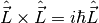
![\left[\hat L_i,\hat L_j\right] = \sum_k i\epsilon_{ijk}\hat L_k .](_images/math/6994b5019e656eaed0fb1cb69597a88de959ae56.png)
More generally, we can define angular momentum as
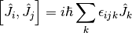
We can prove that
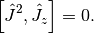
So they can have the same eigenstates

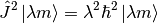
To find the constraints on these eigenvalues, we can use positive definite condition of certain inner porducts, such as,


where
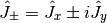
and we have
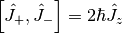
![\left[\hat J_z, \hat J_{\pm} \right] = \pm \hbar \hat J_{\pm}.](_images/math/c1b877b656b93ccba29bbf44fd72073151bcd4da.png)
It’s easy to find out that
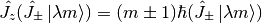
i.e.,  is eigenstate of
is eigenstate of  .
.
Follow the plan of finding out the bounds through these positive inner products, we can prove that


Eigenstates of Angular Momentum¶
As we have proposed, the eigenstates of both and 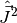 are 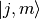, where 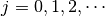 and  .
.
We can also find out the wave function in 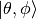 basis. Before we do that, the definition of this basis should be made clear. This basis spans the surface of a 3D sphere in Euclidean space and satisfies the following orthonormal and complete condition.
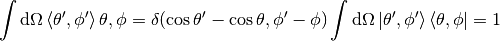
Now we have an arbitary state  ,
,
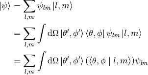
Then we define
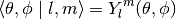
which is the spherical harmonic function.
Then
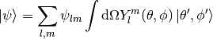
So as long as we find out what  is, any problem is done.
is, any problem is done.